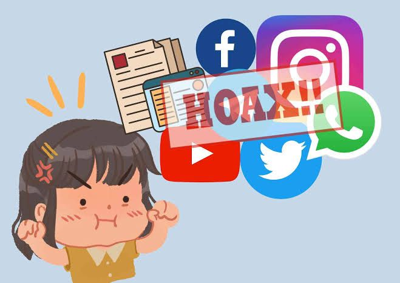

Analisis Penyaringan Berita Hoaks
Hoaks adalah informasi yang sebenarnya tidak benar, namun disusun sedemikian rupa agar tampak seolah-olah benar. Hoaks berbeda dari rumor, ilmu semu, berita palsu biasa, ataupun lelucon April Mop.
Di era digital saat ini, pemahaman tentang keamanan data, etika penggunaan internet, dan kemampuan mengevaluasi informasi sangatlah penting. Masyarakat yang memiliki literasi digital akan mampu berkontribusi positif dan produktif di ruang digital.
Ciri-Ciri Berita Hoaks
- Berasal dari situs yang tidak terpercaya
- Tidak mencantumkan tanggal kejadian
- Tempat kejadian tidak jelas
- Penggunaan bahasa yang tidak konsisten atau membingungkan
- Mengandung unsur SARA secara berlebihan
- Bahasanya sangat emosional dan provokatif
- Tidak relevan dengan fakta yang ada
- Isi berita tidak logis, terlalu langka, atau aneh
Cara Melaporkan Berita Hoaks
- Laporkan langsung melalui fitur yang tersedia di platform media sosial masing-masing
- Gunakan fitur Umpan Balik di Google untuk melaporkan hasil pencarian yang menyesatkan
- Gunakan fitur Report Tweet di Twitter untuk melaporkan konten yang menyesatkan
- Gunakan fitur Report Status di Facebook dan pilih kategori yang sesuai (misalnya ujaran kebencian atau hoaks)
- Laporkan konten negatif ke situs resmi Kementerian Komunikasi dan Informatika (Kominfo)
- Manfaatkan layanan cek fakta dari situs terpercaya seperti cekfakta.com
Kesimpulan: Literasi digital sangat penting untuk membantu masyarakat mengenali, menyaring, dan melaporkan berita hoaks agar ruang digital menjadi lebih sehat dan aman.